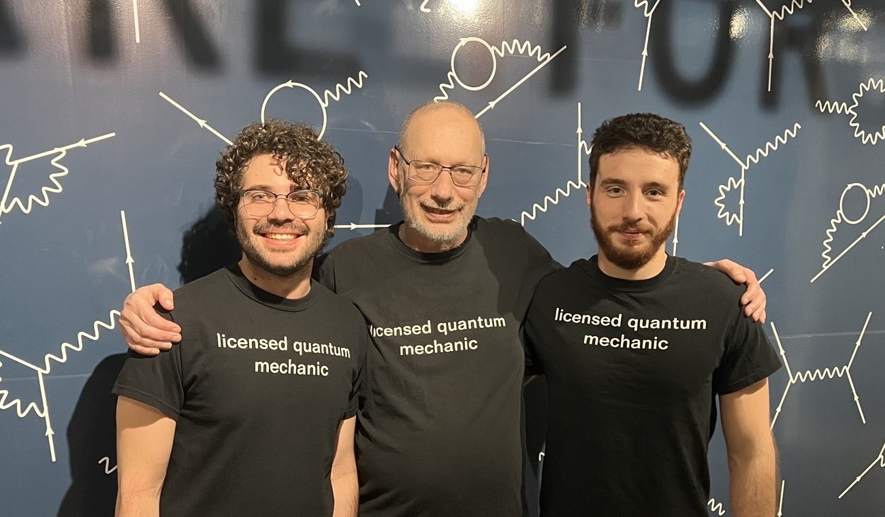

“Hey Mark”
For the last five years, knocking on his office door and saying those words was my good morning ritual. Sometimes he would answer immediately, while scrolling through the arXiv; other times he was simply too absorbed in his calculations (rigorously hand-written in yellow notebooks) or blasting 70s music through his Bose headset to notice me. But eventually, I would catch his attention in some way. Because his door was always open. Always.
He would look at me, holding the back of his neck with his hand, and smile: “How’s it going?” I never knew beforehand what our conversation would become. Sometimes it was about a new problem for Ph205 (“A field redefinition should do the trick”), other times about the stock market, or politics and, of course, Physics. There was no question I couldn’t ask, no problem I couldn’t pose, that Mark would have dismissed. Little by little, with patience and resilience, he taught me that every problem is worth approaching and can be understood by tackling it bits after bits.
Six weeks ago, at the end of my defense, Mark shook my hand and told me: “Congratulations, Doctor!” But I didn’t feel different. I think that is because, throughout these years, he had already treated me as a peer, a collaborator, a friend, and sometimes a grandson. A grandson with tachycardia.
At the Athenaeum, we would check both our pulses using our Apple Watches, and mine was always worse. “Jeez, I should give you my cardiologist’s number.”
Steak dinners at Magnolia House, or on Granville’s rooftop, were our favorites — sometimes to celebrate a new paper, always with Jackie’s permission. We would always share a glass of red wine and talk about anything.
He would tell me about that time that Feynman posed him a question during his seminar and he worked all night long on the answer. Or when he was testing cables in a factory and blew everything out with a very high voltage. Or the time he was in Rome, having breakfast right in front of the Colosseum and taking the train to Frascati.
Mark was my advisor with the Capital A. And I’m sure I’m talking on behalf of all his past students when I tell you what an extraordinary advisor he was.
He guided us all along the path, steadying the helm when we doubted ourselves, trusting us when we needed confidence, leading us when we were lost and letting us go when we needed independence.
Through his preparation, wit, intellectual generosity, patience, contagious enthusiasm for physics, he has been a never-ending source of inspiration and guidance for generations of scientists. He showed us all the kind of physicists, mentors and educators we could hope to become.
Mark used to say that if God existed, when he reached heaven, God would test him to determine if he was worthy of being there. God would ask him what his most important contribution to Physics had been, and he would answer: “HQET.” Then he would add: “At least it’s real, not like BSM physics.”
And now I imagine you standing in front of the best blackboard in the Universe, with God seated before you and taking notes, as you write down the HQET Lagrangian in terms of the heavy superfields. I imagine you explaining it with your usual patience, enthusiasm, that familiar spark in your eyes, tossing a coin to an angel who answered correctly and singing “the thrill of victory” at the end of the proof. And somehow, even in heaven, you’re still teaching.
I had the immense honor of being your last student, Mark. But I know I will not be the last person you teach.
You will continue teaching through all of us, every time we trust a young scientist before they fully know how to trust themselves, every time we stay with a problem instead of giving up, every time we leave our door open, every time we look more deeply at Nature and uncover her secrets.
You made this little corner of the Universe brighter… And, I promise, it will continue to shine with your light.
Thank you, Mark!